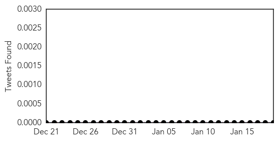
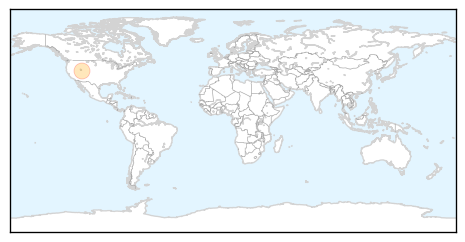

Measles
30-Day Web Trend
11 alerts, 3 warnings

30-Day Twitter Trend
0 alerts, 0 warnings

Article Locations

Article Confidences

Top Articles:
- 0.993
- Measles pops up in outbreak linked to Disney parks
- 0.988
- Outbreak in Ohio adds to 18-year high of measles cases in U.S.
- 0.982
- Measles Outbreak Now Reaches 51 Cases
- 0.979
- Measles case: Unvaccinated students barred from H.B. High till Jan. 29
- 0.972
- Measles outbreak spreading beyond Disney visitors
- 0.958
- Disneyland measles outbreak continues to spread
- 0.940
- 4 more suspected measles cases reported in San Diego County
- 0.933
- Vista clinic cleared of measles exposure
- 0.921
- Over 50 Cases Tallied; Disease Continues to Spread
- 0.914
- Study: Don’t delay measles vaccine
- 0.896
- Measles may have made its way to northwest Ohio
- 0.876
- Disney measles spreads across U.S. border, 52 confirmed cases
- 0.856
- Measles Outbreak Spreading In California, Other States
- 0.802
- Timeline: San Diego County Measles Cases
- 0.787
- Wealthy Anti-vaxxers Are Driving Outbreaks of Deadly 19th Century Diseases
- 0.720
- Third case of measles in Utah County totals 41 reported in four US states
- 0.660
- 3rd case of measles in Utah County linked to Disney visits
- 0.655
- Expanding Disneyland Measles Outbreak Fuels Vaccine Exemption Debate
- 0.592
- 26 measles cases reported with ties to Disney theme parks
- 0.585
- WHO Warns About Worsening Health Conditions in Ukraine
- 0.555
- Anti-vaccine parents found to stick together as their ranks grow
- 0.508
- Measles outbreak spreads, doctors blame lack of vaccinations
Top Tweets:
-
No tweets found for Jan 19, 2015
Hepatitis
30-Day Web Trend
1 alerts, 0 warnings

30-Day Twitter Trend
0 alerts, 0 warnings

Article Locations
Article Confidences

Top Articles:
Top Tweets:
-
No tweets found for Jan 19, 2015